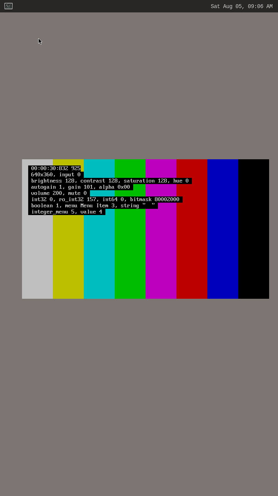

AUTHOR: BeeGroove Members
10/07/2022 - The VIVI driver. A Starting point for V4L2 device driver
The v4l2 vivi (Virtual Video) driver is a good starting point for v4l2 driver developers. This as suggested by the Linux Kernel documentation enables a virtual video driver. This driver emulates a webcam, TV, S-Video and HDMI capture hardware, including VBI support for the SDTV inputs. Also video output, VBI output, radio receivers, transmitters and software defined radio capture is emulated.
In order to build the vivi driver the following configs are needs.
CONFIG_MEDIA_TEST_SUPPORT=y
CONFIG_V4L_TEST_DRIVERS=y
CONFIG_VIDEO_V4L2_TPG=m CONFIG_VIDEO_VIVID=m
Then just compile the Linux kernel with modules using the following commands. (We test this build on arm64 SOC, Mainline Kernel, 5.19.0-rc2)
make CROSS_COMPILE=$CROSS_COMPILER ARCH=arm64 Image dtbs modules INSTALL_MOD_PATH=./MODULES
Once the compilation is done we can insmod the vivi driver into the booting kernel, vivi.ko can be found on the following path:
drivers/media/test-drivers/vivid/vivid.ko
Insmod v4l2-tpg.ko and vivid.ko
insmod /lib/modules/5.19.0-rc2-00014-gd22a09dfd2a2-dirty/kernel/drivers/media/common/v4l2-tpg/v4l2-tpg.ko
insmod /lib/modules/5.19.0-rc2-00014-gd22a09dfd2a2-dirty/kernel/drivers/media/test-drivers/vivid/vivid.ko
Driver is probed with the following logs:
[ 259.127576] vivid-000: using single planar format API
[ 259.132575] vivid-000: V4L2 capture device registered as video6
[ 259.134030] vivid-000: V4L2 output device registered as video7
[ 259.134605] vivid-000: V4L2 capture device registered as vbi0, supports raw and sliced VBI
[ 259.135083] vivid-000: V4L2 output device registered as vbi1, supports raw and sliced VBI
[ 259.135533] vivid-000: V4L2 capture device registered as swradio0
[ 259.135940] vivid-000: V4L2 receiver device registered as radio0
[ 259.136419] vivid-000: V4L2 transmitter device registered as radio1
[ 259.137571] vivid-000: V4L2 metadata capture device registered as video8
[ 259.138034] vivid-000: V4L2 metadata output device registered as video9
[ 259.138477] vivid-000: V4L2 touch capture device registered as v4l-touch0
Test is done in a Yocto Wayland distro, for this reason before use gstreamer to get some frame from dummy sink, the following env variables are required
export XDG_RUNTIME_DIR=/run/user/1000
export WAYLAND_DISPLAY=wayland-0
Finally gst-launch could be used! :)
gst-launch-1.0 -v v4l2src device=/dev/video6 ! video/x-raw,framerate=30/1,width=640,height=360 ! waylandsink
